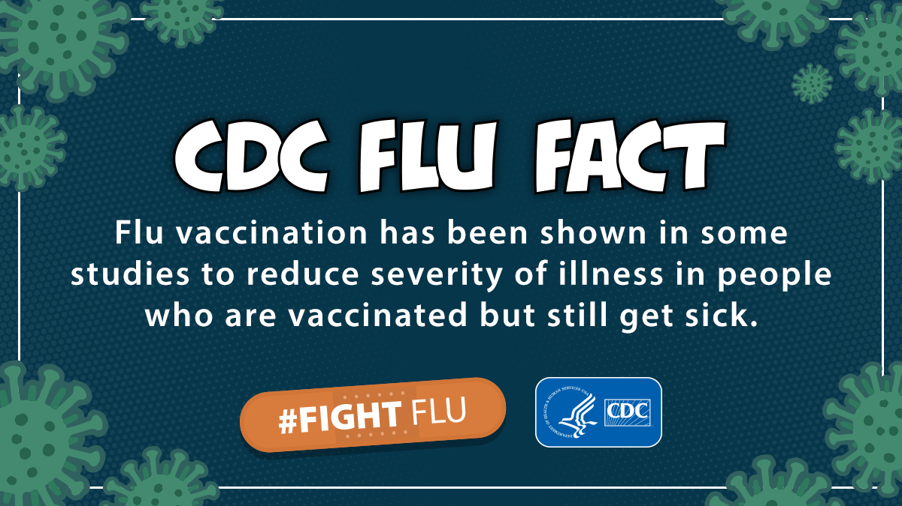

GRIEVANCE III ◆ ECONOMIC STEWARDSHIP
He has accepted reductions in health coverage that place families, clinics, and rural communities at risk.
THE RECORD SHOWS
CBO projected that Medicaid-related provisions of the 2025 budget law would leave 7.5 million additional people uninsured by 2034.

The official estimate for the law’s Medicaid and related chapter is 7.5 million more uninsured in 2034, alongside about $887 billion in projected deficit reduction from that chapter. Wider estimates that include other health-law provisions are larger and should not be confused with this specific figure. Supporters describe the law as addressing eligibility and waste; critics warn about loss of coverage, uncompensated care, and strain on rural providers. These are forecasts, not a count of people already removed from insurance.
A DOCUMENTED SEQUENCE
3 MILESTONES- July 2025The reconciliation law introduced Medicaid eligibility, financing, and verification changes.
- October 2025CBO estimated 7.5 million additional uninsured people in 2034 from the Medicaid-related chapter.
- 2026 onwardSeveral changes have future implementation dates; the projected coverage losses are not fully realized today.